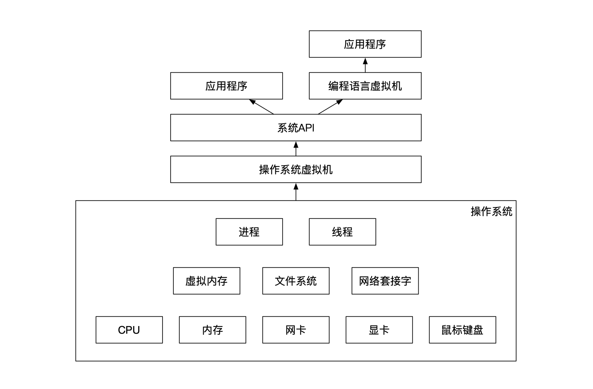
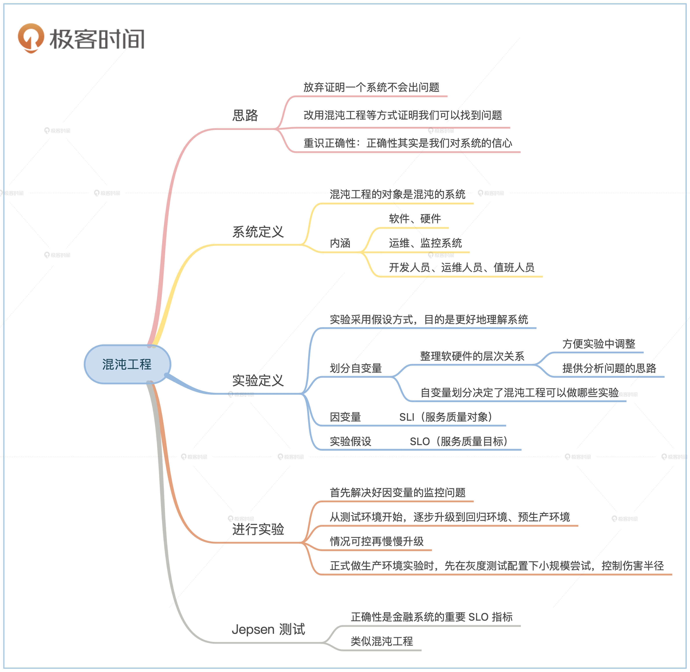

- 00 开篇词 如何成为金融级人才？.md.html
- 01 业务初探：扫了二维码之后发生了什么？.md.html
- 02 原理解读：如何理解第三方支付的业务逻辑和系统组件？.md.html
- 03 产品大观：不同金融业务都有哪些技术实现要点？.md.html
- 04 领域驱动设计（上）：如何设计金融软件顶层架构？.md.html
- 05 领域驱动设计（下）：如何设计统一的金融业务模型？.md.html
- 06 计算输入的正确性：怎么选择正确时间的数据？.md.html
- 07 计算过程的正确性：如何设计正确的数据处理架构？.md.html
- 08 计算结果的正确性：怎么保证计算结果是正确的？.md.html
- 09 数据传输的质量：金融业务对数据传输有什么要求？.md.html
- 10 数据存储的合理性：金融业务可以不用关系型数据库吗？.md.html
- 11 系统优化：如何让金融系统运行得更快？.md.html
- 12 正确性分级（上）：单机无备份有哪几种不同的一致性？.md.html
- 13 正确性分级（中）：多机无容灾有哪几种不同的一致性实现？.md.html
- 14 正确性分级（下）：多机有容灾有哪几种不同的一致性？.md.html
- 15 分布式正确性的存在性（上）：什么情况下不存在分布式共识算法？.md.html
- 16 分布式一致性（下）：怎么理解最简单的分布式一致性算法？.md.html
- 17 正确性案例（上）：如何实现分布式的事件溯源架构？.md.html
- 18 正确性案例（中）：常见分布式数据方案的设计原理是什么？.md.html
- 19 正确性案例（下）：如何在运行时进行数据系统的动态分库？.md.html
- 20 容灾（上）如何实现正确的跨机房实时容灾？.md.html
- 21 容灾（下）：如何通过混沌工程提高系统稳定性？.md.html
- 春节策划第1期 分布式金融系统知识，你掌握了多少？.md.html
- 春节策划第2期 读书如抽丝，为你推荐一些我读过的好书.md.html
- 春节策划第3期 如何运用架构知识解读春运买票和手游案例？.md.html
- 答疑集锦（一） 思考题解析与外汇架构知识拓展.md.html
- 答疑集锦（三） 思考题解析与数据库底层实现.md.html
- 答疑集锦（二） 思考题解析与账务系统优化.md.html
- 结束语 金融之道，与你同行，虽远尤欣.md.html
- 捐赠
21 容灾（下）：如何通过混沌工程提高系统稳定性？
你好，我是任杰。今天我们来聊聊混沌工程。
这一讲是第三个模块“分布式正确性及高可用”的最后一讲。我们前面学习了实现金融系统正确性、可用性的许多方法。
不过，尽管你掌握了各种金融系统的屠龙之技，平时工作也兢兢业业，但是业务方并不一定懂技术。他们怎么才能放心让几百亿上千亿的业务跑在你的系统上呢？
所以，这节课我们就来看看，如何通过混沌工程来证明系统是正确的。这一块内容涉及面非常广，所以我还是会照例给你重点讲解混沌工程背后的原理，你了解了背后的原理之后，很容易就能在实践中加以应用了。
分布式系统正确性理论
我们在学习算法的时候，老师和教材都会证明为什么算法是正确的。分布式系统也是一样，有很多对于分布式算法的正确性证明。但是不知道你发现了没有，我们从来没有说Raft共识算法是正确的？
Raft算法已经在很多环境运行了很长的时间，从来没有人怀疑过它的正确性。如果你看过Raft算法的论文，也会觉得它应该是正确的。那为什么我们不会说Raft算法是正确的呢？
原因是现在都是通过形式语言的方式来证明分布式算法的正确性。形式语言证明有一个局限，它只能证明有限状态的情况。由于Raft算法涉及到无限种可能的情况，因此无法通过形式语言来证明正确性。
既然我们无法从理论上证明Raft共识算法的证明性，那么也无法通过实践来证明，原因是逻辑推理过程比主观推理过程的正确性要高，算法的实现不可能比理论的正确性要高。
所以，从Raft共识算法的例子可以看出来，我们需要换一种思路来证明金融系统的正确性。
用不正确来证明正确
我们可以选择“用不正确来证明正确”的思路吗？这不是绕口令，它是一种很巧妙的思维方式。
逻辑证明有一个原则是证有不证无。比如说，如果让你证明这世界上存在一只黑天鹅，你只要找到一只就可以了。但是如果让你证明这世界上没有黑天鹅，那么你需要跑遍全世界才可以，而且就算你跑遍了全世界，我也可以说你其实漏掉了一些地方。
系统的正确性证明也是一样。我们只能证明系统中可能会出问题，而不能证明系统一定不会出问题。
从数学的角度看，你能证明的场景是可数集，但是自然界的很多集合都是不可数的。再简单的软件，它运行时的周边环境也极其复杂。因此不管你再怎么努力，也无法穷举所有的可能性来证明系统没有问题。
这就说明，我们对于正确性的证明需要换一种理解方式。我们需要放弃证明一个系统不会出问题，也就是没有bug，而是要证明我们可以找到bug。
由于寻找bug需要一定的人力物力和时间成本，当你解决了一些显然易见的问题之后，剩下的问题就会越来越难发现。
你还记得，我们在开篇词提到过金融系统需要考虑性价比么？如果发现bug的成本过大，但是带来的问题过小，那么我们就会放弃寻找bug。这时候我们就会说系统出问题的可能性非常小，达到了我们对于正确性的要求。
因此，系统的正确性是一个概率问题，套用一个统计学的术语，正确性其实是系统不会出大问题这个结论的置信区间。通俗一点来说，正确性其实是我们对系统的信心。
混沌工程原理
系统定义
混沌工程，就是顺着我前面说的概率思路来回答正确性问题。它通过改变环境来提高出问题的概率。如果这时候依然没有发现问题，那么平常的情况下的正确性可能会更高，我们也就对系统更有信心。
首先，我们来看看什么系统需要用到混沌工程。和我们在第5节课领域驱动设计的条件一样，只有当系统复杂的情况下才需要使用。在分析为什么之前，让我们先来看看什么是系统。
虽然我们一直在提系统，比如软件系统、金融系统，但是我们从来没有对系统进行过定义。系统是由相互作用、相互依赖的若干组成部分结合而成，是具有特定功能的有机整体。系统本身也是另一个更大系统的组成部分。
那我们应该关注系统定义里的哪些内容呢？这里就要提到系统复杂度了。当系统的组成部分超过3个之后，系统就很有可能会进入混沌（Chaos）的状态。处于混沌状态的系统，它的行为是非线性的。我们可能不容易对非线性这个词产生直观的感受。通俗一点来说，非线性指的是无法预测和描述。
所以，混沌工程的对象是混沌的系统。
通常我们对软件系统的理解局限在软件上。一个系统要想生存，除了软件之外，还需要有周边环境的配合。因此，我们在这里的系统指的不仅仅是软件，还包括硬件、运维系统、监控系统、开发人员、运维人员、值班人员等等。这是一个容易忽略的地方，你一定要注意。
实验定义
我们在前面分析正确性证明的时候，提到过正确性证明其实是一个概率置信区间的问题。既然是一个概率统计题，那么我们就可以用统计的方法来解决问题。
这里我们要用到一些统计学的术语。我们在混沌工程开始前要定义一些我们关心的实验。
首先要定义的是实验的假设（Hypothesis）。这个假设里涉及到两大类主体，一类是自变量，一类是因变量。
自变量是你能控制的东西，比如你可以决定软件运行的方式和它周围的环境。
而因变量是被自变量影响的变量。比如当你关掉数据中心硬盘之后，如果系统给你发了一条短信，那么关掉硬盘是自变量，发短信就是因变量。而假设就是我们在实验前提出的，自变量和因变量之间的影响。
在这里还要解释一个常见的误解，那就是混沌工程实验和测试的区别。测试是在我们已经知道正确答案是什么了的情况下进行的实验，测试的目标是为了肯定正确性。而混沌工程实验是在我们不知道会发生什么的情况下进行的实验，混沌工程的目标是为了更好地理解系统。
正因为混沌工程不知道会发生什么，实验会采用假设，而不是断言（Assert）的方式。当然了，如果混沌工程暴露了不好的结果，我们也应该和测试bug一样做修复。
自变量定义
如何找到统计学的自变量没有一般规律，但是软件行业有自己的行业特殊性，我们可以总结出一些软件系统的自变量规律。这里就涉及到你对整个软件运行架构的理解深度了。
我们先看看最常见的情况，也就是软件系统运行环境。现代的软件工程都会把系统分成了很多层。上下层之间有比较清晰的功能访问区分。
处于最下层的是硬件。通常来讲硬件和输入输出有关。常见的硬件有CPU，硬盘，内存，网卡，显卡，鼠标键盘等等。
再上一层是操作系统。操作系统负责管理所有硬件资源，并将这些硬件资源抽象成软件可以理解的概念，然后分配给多个用户。因此，操作系统需要处理所有前面提到的硬件资源。
同时，操作系统还在硬件之上抽象出了更高一级的软件资源，比如虚拟内存、文件系统、网络套接字（Socket）。这些软件资源也有一些更高一级的管理方法，比如进程和线程。
随着云计算的崛起，操作系统之上不再是软件，而是虚拟机了。虚拟机提供了独立于操作系统的虚拟环境。有的虚拟机选择虚拟出一个不一样的运行环境，比如VMWare，有的虚拟机选择虚拟出一个几乎类似的运行环境，比如Docker。
当然了，这里对于虚拟机的分类并不是特别完整和准确，主要目的是为了让你知道虚拟机是对操作系统更高一级的抽象。
在虚拟机之上是系统API。系统API提供了能访问操作系统的编程接口。
比系统API更高一级的是用户的应用程序。如果用户的编程语言选择了Java或者Python等解释型编程语言，那么还有一个中间层是这些编程语言的运行时虚拟机。
下图展示了软件系统运行环境的各个层级：

那我们为什么要介绍软硬件的层次关系呢？这里有两个原因。第一个原因是这些都是你可以控制和调整的自变量。也就是说，你在实现混沌工程的时候，可以考虑对这些提到的对象进行调整。
第二个原因更重要，刚才的这个层次划分关系能给你提供分析问题的思路。计算机软件是一个从复杂到简单，从底层到高层的抽象过程。每次抽象都是靠新增一个层次关系，因此你可以顺着这个思路来解决一些我们没有提到过的场景。
比如说，在现在云计算环境下，一个程序不再局限在一台机器上。这种情况下，你应该怎么分析自变量呢？
我们也可以从划分层次的角度来思考这个问题。比如说从硬件的视角，你可以从底层到高层的划分机器为刀片、机柜、单个数据中心、城市容灾集群，然后再依次处理。
自变量的划分决定了混沌工程可以进行哪些实验。每一个自变量都定义了自己支持的操作类型。比如硬盘可以慢，也可以出错，网卡可以断网，也可以掉帧。自变量定义得越准确，实验就能设计得更精细。
因变量定义和假设定义
因变量就是你通过实验想检验的目标。这里就涉及到4个名词：SRE、SLA、SLO和SLI。
SRE的全称是Site Reliability Engineer，也叫作站点可靠性工程。这个工种的传统说法就是运维。但是现在随着云计算规模的扩大，这个工种也有了更大的责权范围和专业性提高。简单来说，他们负责帮助定义和实现SLA，SLI和SLO。
SLA、SLI和SLO是三个非常容易搞混的名词。SLA是Service Level Agreement，也叫服务质量协议。SLO是Service Level Objective，也叫服务质量目标。SLI是Service Level Indicator，也叫服务质量对象。
SLA是整个服务质量的协议，包含了SLO和SLI。SLI是监控的对象，比如吞吐量、延时、性能等等。
SLO是我们认为这些监控的指标需要达到的目标。比如我们在提到网站高可用的时候都说要到达5个9，也就是99.999%。这里的高可用就是监控对象，而99.999%就是需要达到的目标。
对于混沌工程这个实验来说，SLI就是因变量。我们在混沌工程这个实验中通过改变自变量来影响监控对象。而SLO就是实验假设。
比如说，我想通过关掉一块硬盘来看看是否影响服务器的高可用。在这个实验里，硬盘就是自变量，高可用是因变量，高可用是否会因此发生变化是实验假设。
实验过程
当我们定义好自变量、因变量和实验假设之后，还不能马上开始实验。在实验前还要有一些准备工作。
首先需要解决的是因变量的监控。不知道你有没有想过一个问题。同样都是工程，我们为什么能比较准确地估计修一个楼房需要的时间，但是往往不能估计一个软件的开发时间？
答案在于建筑工程是肉眼可见的工程。我们既然能看到进度，就比较容易理解各个组件之间的关系，也就容易控制。
相反，软件是看不见摸不着的，和空气一样，我们只能间接了解软件的情况。软件的不可见性让我们很难理解软件究竟做了些什么。
因此，为了能更好第了解混沌工程，我们需要在软件中加上尽量多的监控指标，覆盖所有相关的SLI（因变量）。
另一个需要准备的是实验过程。混沌工程的目的不是为了故意让生产环境出问题，而是通过制造问题，来帮我们更好地理解生产环境的能力范围。因此我们只要能收集到会出现哪些变化就行，尽量不要太影响生产环境的正常运行。
因此一个好的步骤是将实验慢慢升级。最开始的时候从测试环境开始。当情况可控之后再逐步升级到回归环境、预生产环境。
最后在生产环境运行时，我们也最好先在灰度测试配置下进行小规模的实验。我们把这个过程叫作伤害半径（Blast Radius）。我们要将这个伤害半径控制得尽量小。
Jepsen测试
前面提到过，混沌工程实验会监控SLO的变化。SLO通常和吞吐量、高容灾和延时等有关。对于金融系统来说，还有一个非常重要的SLI指标是正确性。金融系统正确性的目标通常是100%。
有一类专门用来证明分布式系统正确性的工具，它叫Jepsen测试。Jepsen是这个测试的发明人。Jepson测试和混沌工程一样，也会定义一些自变量和实验。但是当实验完成之后，它会从各个节点收集数据，验证最后的结果是否正确。
Jepsen在自己网站上列举了他发现过的各种分布式系统问题，你有兴趣可以了解一下。你会惊讶地发现，很多熟悉的数据系统其实并没有它们宣传的那么正确。
小结
这节课我们学习了怎么通过混沌工程来提高系统的正确性。
分布式系统并不一定能证明是正确的，因此我们需要换一种思路，用不正确性来证明正确性。如果不正确出现的情况足够少，那么我们就有足够多的信心认为系统是正确的，因此正确性是一个概率上的置信区间问题。
混沌工程就是用概率的思路来解决问题。它通过改变系统运行环境来提高出混沌系统出问题的概率，因此混沌工程是个统计实验。为了进行这个实验，我们需要定义好实验的自变量、因变量和实验假设。
在实验的过程中，我们需要精心控制事故的伤害范围，实验以了解混沌系统的行为为目的，而不是刻意地损坏生产环境。
金融系统最关心的是正确性，在分布式环境下有一类正确性测试叫Jespsen测试。这个测试和混沌工程几乎完全一样，只是在SLO的定义上有些许不同。

金融系统的正确性和金融业务的风控一样，都是投入巨大，但是产出不明显的工作。只有当潮水退去的时候才能知道谁在裸泳，同样的，只有在出了资金问题之后，人们才知道金融系统的正确性有多重要。
我们自己在做基于Raft共识算法的支付系统的时候，整个研发只用了3个月，但是混沌测试了一整年，其中最后一个bug是在混沌测试半年之后才发现的。在这个期间，已经有几家加密货币交易所因为代码问题造成了资损。
所以正确性是金融系统开发人员的道德底线，一定不能先做大再做强，而要先做强再做大。
思考题
我们的最后一道思考题也很简单。我在最开始说过Raft算法有无限种状态，因此无法通过形式语言来证明这个分布式算法的正确性。那么Raft的无限种状态指的是什么状态呢？
欢迎你在留言区晒出你的心得或者疑问。如果这节课对你有启发，也欢迎转发给同事、朋友，一起交流混沌工程这个话题。
© 2019 - 2023 Liangliang Lee. Powered by gin and hexo-theme-book.